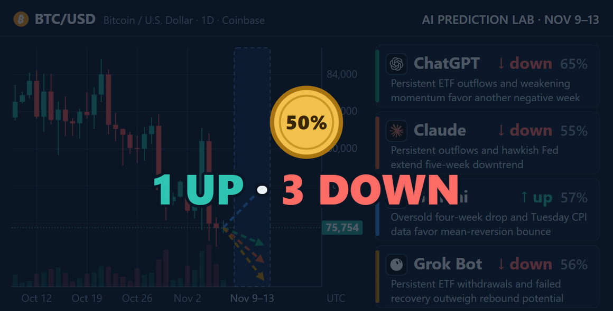

Four AIs call Bitcoin's week of November 9
Every week, four AIs answer the same question about Bitcoin, and the lab records each answer in a public ledger before the week starts. For November 9–13, three of them, ChatGPT, Claude and Grok Bot, call the week down. Gemini calls it up. None of them is very sure: the highest confidence is ChatGPT's 65%, and the lowest is Claude's 55%.
The one call for higher has changed hands. Last week it was Grok Bot's, and it missed; the three calls for lower hit. Last week's result.
- 3 of 4call the week lower: ChatGPT, Claude and Grok Bot
- 65%the highest confidence, ChatGPT's
- 57%Gemini's confidence, on the only call for higher
- $1.28Bof spot Bitcoin ETF outflows on November 2–6, cited by all four
The question
Each AI got the same prompt, word for word, in a fresh chat. It is last week's prompt with only the dates changed. The question in it:
Will the Coinbase BTC-USD price at Friday 13 November 2026, 23:59:59 UTC be strictly higher than the price at Monday 9 November 2026, 00:00 UTC?
UP means the Friday price is strictly higher. Anything else counts as DOWN, an unchanged price included. There is no flat option, so each AI has to pick a side. It shows doubt with its confidence: a whole number from 50 to 100, how likely it thinks its call is to be right. 50 is a coin flip.

The calls
BTC in the week before the calls, and which way each model called the week
- ChatGPT Lower Confidence 65%
- Claude Lower Confidence 55%
- Gemini Higher Confidence 57%
- Grok Bot Lower Confidence 56%
The bar shows how sure each model said it was. The mark in the middle is 50%: no surer than a coin flip. Candles: Coinbase Exchange BTC-USD, 4-hour (hollow: rose, filled: fell). The dashed line is the last close before the calls; each arrow is one model's call, up for Higher and down for Lower; its slant shows which way, not how far.
![Daily Coinbase BTC/USD candles through November 7, a price label at 75,754 and a shaded box for November 9–13, with four dashed arrows from the last candle, one pointing up and three down. Beside it, four cards: ChatGPT, down, 65%: Persistent ETF outflows and weakening momentum favor another negative week. Claude, down, 55%: Persistent outflows and hawkish Fed extend five-week downtrend. Gemini, up, 57%: Oversold four-week drop and Tuesday CPI data favor mean-reversion bounce. Grok Bot, down, 56%: Persistent ETF withdrawals and failed recovery outweigh rebound potential.](../img/btc-calls-2026-11-09-cards.jpg)
What they found
The prompt comes with no data. Each AI searched for its own and was asked to name its sources and give the time of the latest BTC price it saw. This week the four answers lean on much of the same news: all four cite about $1.28 billion leaving US spot Bitcoin ETFs on November 2–6, and all four name the US consumer price report, CPI, due on Tuesday. A spot Bitcoin ETF is a fund that holds bitcoin and trades on the stock market. CPI measures how fast prices are rising.
The two charts show what each answer says. This page has not checked the prices.
The line runs from the lowest to the highest, not from zero: ≈$75,800 to $75,902.42
- ChatGPT$75,89512:30 UTC, as reported by BitcoinBagger
- Claude$75,85112:20 UTC, no exchange named; it also gives $75,777.67 on Coinbase at 10:20 UTC
- Gemini≈$75,80016:45 UTC on Coinbase, citing CryptoTicker and 24/7 Wall St.
- Grok Bot$75,902.4217:45:50 CET, which is 16:45:50 UTC, on the Coinbase Exchange ticker
The four prices are about $102 apart at most. All were seen on Sunday, between about 7 and 12 hours before the Monday 00:00 UTC price the calls are measured from.
- ChatGPT4site tags under its points, no links
- Claude15a "Sources" list at the end, no links
- Gemini3names and dates in brackets, no links
- Grok Bot3five links in the text, the only answer with any
The forms differ, so the bars count what each answer shows, not how much research went into it. A site named more than once counts once: Claude lists Analytics Insight twice, and Grok Bot's five links go to Coinbase, Farside and the US Bureau of Labor Statistics. Two of ChatGPT's tags carry a "+1" for a further source the copied answer does not name.
In their own words
Each AI ends its answer with a brief reason and the two or three factors that matter most to its call. The factors are shown here as each AI wrote them, split by the way each one pulls.
ChatGPT Lower · 65%
- $1.28 billion in weekly spot Bitcoin ETF outflows
- Failed recovery near $81,000 and elevated market fear
- Tuesday's US CPI release could improve risk sentiment
Claude Lower · 55%
- ETF outflows, BTC lagging stocks
- December hike odds near 80%
- Extreme fear, soft-core CPI consensus
Gemini Higher · 57%
- Persistent spot Bitcoin ETF net outflows
- Tactical mean-reversion setup near $74.7k support
- U.S. CPI inflation release on Tuesday
Grok Bot Lower · 56%
- Persistent ETF outflows
- Failed midweek recovery
- Weekend stabilization and rebound potential
In each model's own words, recorded in the ledger with its call.
The prices, figures and sources below are what each AI reported. This page passes them on and has not checked them.
ChatGPT: down, 65%
Its reason: "Persistent ETF outflows and weakening momentum favor another negative week."
The latest price ChatGPT saw was $75,895, at 12:30 UTC on November 8, as reported by BitcoinBagger, which it says also showed a 7-day change of −2.7% and a Fear & Greed reading of 28. The Crypto Fear & Greed Index runs from 0, extreme fear, to 100, extreme greed.
ChatGPT calls the ETF outflows its strongest point: about $1.28 billion on November 2–6, about $412 million of it on Friday, citing Cryptensive's tracker. It notes that Bitcoin did not hold its early-November high near $81,000. It also cites a CoinDesk report of November 7 on a US Treasury order about the crypto exchange MEXC, and says the direct effect on Bitcoin is uncertain. It puts CPI on Tuesday, November 10, at 13:30 UTC, and the producer price report, PPI, on Friday at the same time. In its words: "The confidence is not higher because CPI could trigger a sharp reversal."
Claude: down, 55%
Its reason: "Persistent outflows and hawkish Fed extend five-week downtrend"
A hawkish Fed is one leaning toward higher interest rates, which tends to weigh on assets like bitcoin. The latest prices Claude found were $75,777.67 on Coinbase at 10:20 UTC on November 8, and $75,851 at 12:20 UTC. It lists 16 sources at the end, from 15 sites, among them CNBC, Phemex, TokenPost and CryptoTicker.
According to Claude, Bitcoin has made five lower weekly closes in a row, measured Sunday to Sunday. It says US spot ETFs lost $1.28 billion on November 2–6, about $1.21 billion of it from BlackRock's IBIT. The signal it weighs most came on Friday, when US stocks rose and Bitcoin fell to a new low. It reports October payrolls of 165,000 against about 59,000 expected, and futures pricing about a 77% chance of a December rate hike. On the other side it puts a Fear & Greed reading of 28, and a fifth straight losing week, which it says has happened only twice since 2017. In its words: "I'm calling DOWN with low conviction."
Gemini: up, 57%
Its reason: "Oversold four-week drop and Tuesday CPI data favor mean-reversion bounce"
Oversold means the price has fallen far and fast. Mean reversion is the idea that after such a stretch, a price tends to move back toward its recent average. The latest price Gemini saw was around $75,800 on Coinbase, at 16:45 UTC on November 8, citing CryptoTicker and 24/7 Wall St. It gave no links.
Gemini counts four losing weeks in a row; Claude, measuring Sunday to Sunday, counts five. According to Gemini, Bitcoin has fallen from above $86,000 in early October and sits just above a support zone at $74,700–$75,000, a price area where buyers stepped in before. It names the same ETF outflows, over $1.28 billion, as the main point against its call, and expects a softer CPI reading on Tuesday to bring relief. In its words, the mix "provides a tactical setup for mean-reversion above Monday's starting price by Friday's close."
Grok Bot: down, 56%
Its reason: "Persistent ETF withdrawals and failed recovery outweigh rebound potential"
The latest price Grok Bot saw was $75,902.42 on the Coinbase Exchange ticker, at 17:45:50 CET on November 8, which is 16:45:50 UTC. It was the only one of the four to give links.
According to Grok Bot, Coinbase daily candles show Wednesday's rebound reaching $81,130.79, then Friday's low of $74,722. It cites Farside's table for about $1.282 billion of ETF outflows on November 2–6, $411.9 million of it on Friday, with Wednesday the only day of inflows. It reports the US jobs data of November 6 and puts CPI on Tuesday and PPI on Friday, both at 13:30 UTC. In its words: "My 56% is a judgment, not a statistically calibrated probability."
How the calls will be checked
- Nov 8, 16:48
Calls recorded The four calls go into the ledger before the week starts.
- Nov 9, 00:00
Start price The Coinbase BTC-USD price the calls are measured from.
- Nov 10, 13:30
US CPI report Named by all four.
- Nov 13, 13:30
US PPI report Named by ChatGPT, Claude and Grok Bot, about ten and a half hours before the end price.
- Nov 13, 23:59:59
End price Strictly higher than the start price counts as UP; anything else counts as DOWN.
- Nov 14
Check Each call is marked a hit or a miss, in the ledger and on this page.
The week ends on Friday, November 13, at 23:59:59 UTC. On Saturday, the lab compares the Coinbase BTC-USD price at that moment with the price at Monday, November 9, 00:00 UTC, marks each call as a hit or a miss, and adds the result to the ledger and to this page.
The calls were recorded at 16:48 UTC on November 8, before the week began. The ledger only grows: an entry is never edited or removed. With each call it stores a SHA-256 fingerprint of the prompt, 8ff1818b9ecf20ec5b72c7a4d20cf81e2c85ff2db76c1192b42bbe68400aef22, so a changed prompt would no longer match.
Updates
Newest first. Each entry is dated, and the text above changes only with a new entry here.
- November 8. First version of this page, with the four calls as recorded.
This is an experiment and documentation, not financial advice. I do not recommend buying or selling anything.